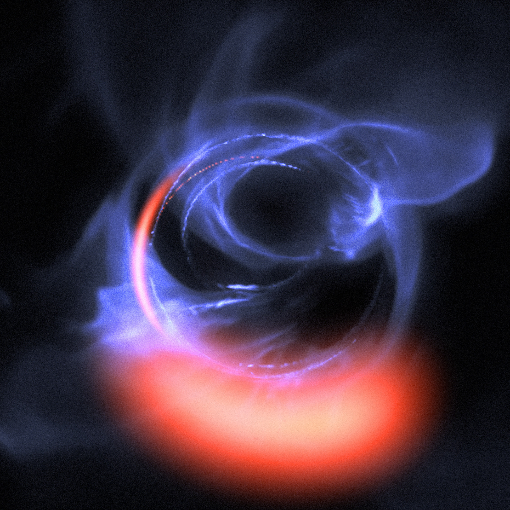

This article initially examines what is meant by the term Computational Astrophysics, then moves on to discuss certain key projects within the field, before concluding with an emphasis on it's importance to future scientific study.
What is Computational Astrophysics?

- The subject studies the integration of Astrophysics and Computer Science.
- Involves both the processing of large sets of data and simulations of cosmological objects, using complex mathematical theories. E.g. Black Hole Collision is modelled very effectively using computer simulations.
- Niche field at the moment, but astrophysics relying more and more on use of supercomputers (in particular).
Major Discoveries and Current Research
As a comparitively new intersectional science, these two distinctions tend to coalesce.
GRAPE (Gravity Pipeline)
- GRAPE is a parallel-processing supercomputer which uses specially created hardware to simulate the influence of a heavy mass object, e.g. star, has on other peripheral objects, e.g. planets, other stars, etc.
- Makes use of Hardware Acceleration (an example of which is GPUs) - specialised to perform a task whilst sacrificing unnecessary functions/benefits of GPCPU.
- Not only helps solve problems involving planetdary formation and astrophysics, but also molecular chemistry and biology.
- Focuses on calculations where F between particles is inversely proportional to r2 and N-body problems (interactions of forces between more than two objects).
Virgo Consortium
- Based at Durham University in the UK, Virgo Consortium for Cosmological Computer Simulations is international scientific group investigating astrophysical simulations.
- Projects include simulating different universes, comparing how the predictions of different programs respond to same initial inputs.
- There has been an adaption of algorithms/codes to study a range of scientific problems. E.g. GADGET code uses tree algorithms to calculate gravitational forces.
- One of the projects included is the Millenium Simulation.
Millenium Simulation
- Millenium Run at Max Planck Institute simulated evolution of matter of the Universe.
- Results used then to analyse evolutionary histories of 20 million galaxies, including central black holes.
- Simulations and modelling applied to real astronomical data and compared.
Bolshoi Simulation
- Considered the most accurate simulation of universal evolution. Effectively rendered the Millenium Simulation obsolete.
- Conducted by Nasa in 2010 using an Adaptive Mesh Refinement algorithm.
- AMR changes certain parts of algorithm accuracy as it is running (dynamic).
Why is Computational Astrophysics important?
- We can view this from a human perspective - it helps us understand our universe and its history through simulations of events we couldn't possibly hope to witness.
- It unites two different STEM disciplines to create advances in both fields - the GRAPE Gravity Pipeline has made significant predictions of N-body problem interactions, whilst the physical supercomputer is considered one of the most efficient in the world (previously top of the Green500).